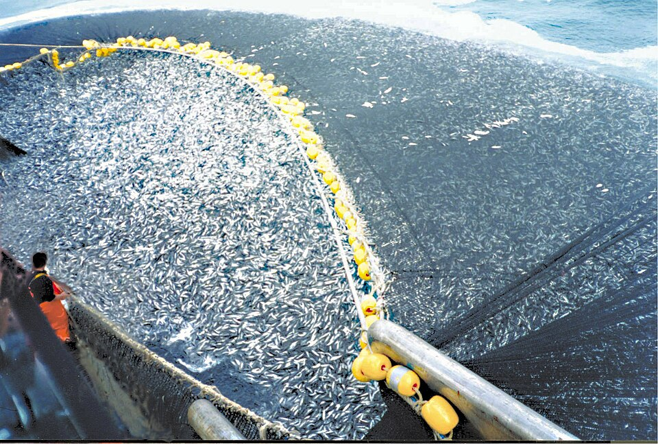
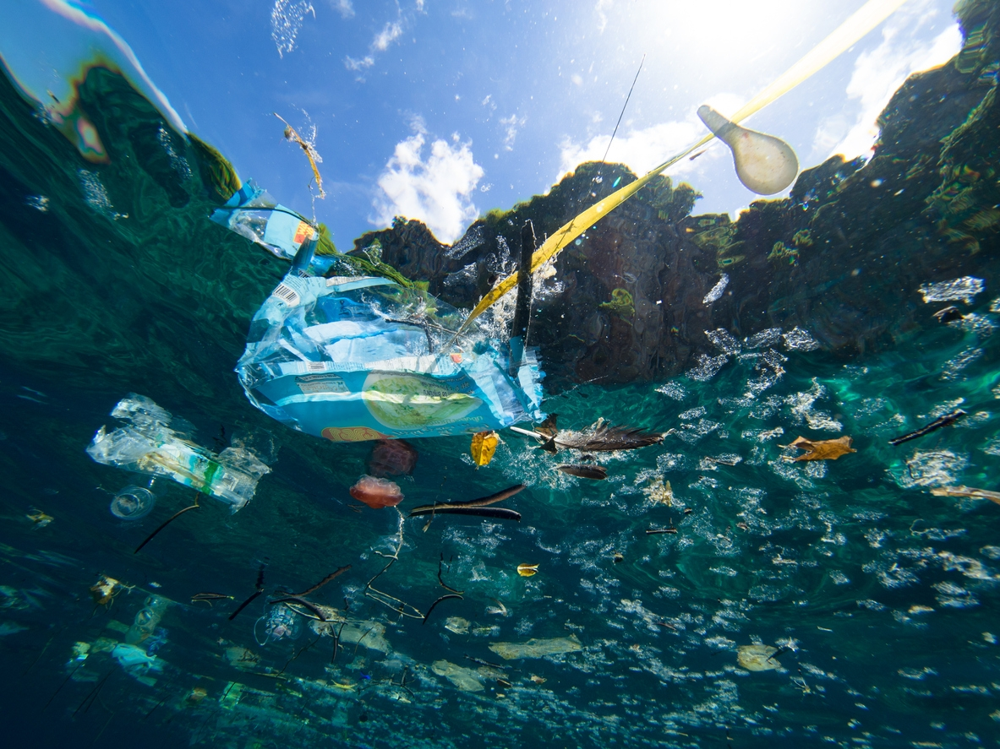
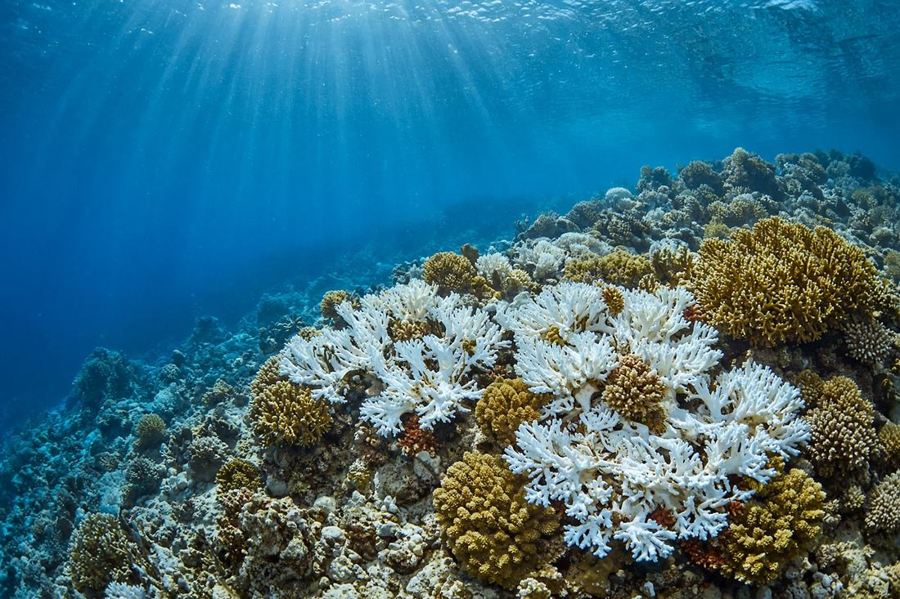
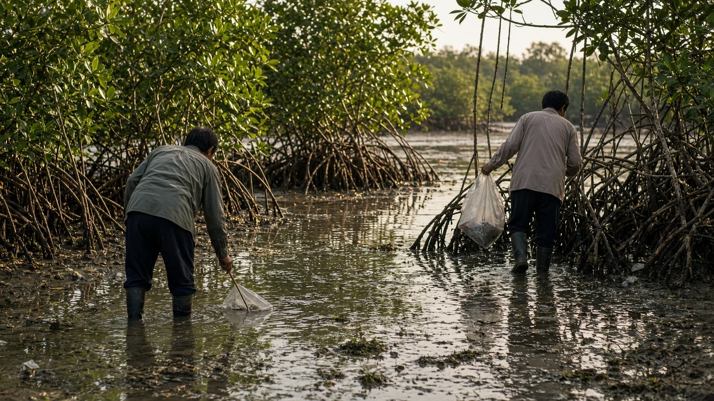

保護海洋
五個入口
過度捕撈
捕得比魚群恢復得更快，海裡的食物網就會從上層開始鬆開。

02海洋垃圾
瓶子、發泡膠和廢棄漁網不會在潮線上停下，它們會繼續往海裡走。

03海水溫度上升
海洋吸收了地球系統裡大部分多出來的熱，珊瑚和魚群先受到影響。

04海洋污染
油膜、肥料、污水和噪音多半從城市與農田出發，最後才到達海。
 05
05
人類城市開發
填海、道路和海堤把連續的潮間帶切開，魚苗和紅樹林一起失去位置。

用來建立概念的四個數字
以下是 FAO、IPCC 與聯合國環境規劃署常被引用的估計，經四捨五入，用來看見規模，不是即時監測。
約 1/3受評估魚群處於過度捕撈FAO
上千萬噸塑膠每年從陸地進入海洋研究估計
約 90%額外的熱被海洋吸收IPCC
約 80%海洋污染常被認為源自陸地UNEP 常引用
怎麼一起看
保護不是先選一個最愛的議題。
這五件事常常被分成不同版面。海不這樣分類。過度捕撈讓魚群變脆弱，暖化改變牠們的分布，污染和垃圾削弱近岸，城市開發再把繁殖場本身拿走。
01
先分開看清楚
五個主題各有自己的原因。拖網、塑膠瓶、白化、排污和填海，不是同一種新聞。
02
再放回同一條海岸
魚變少、水變暖、繁殖場被填掉，會疊在同一群生物身上。分開治理，仍要一起理解。
03
從做得到的動作開始
少一次即棄餐具、問海鮮的季節、不踩珊瑚、討論填海時問潮間帶還剩多少。
